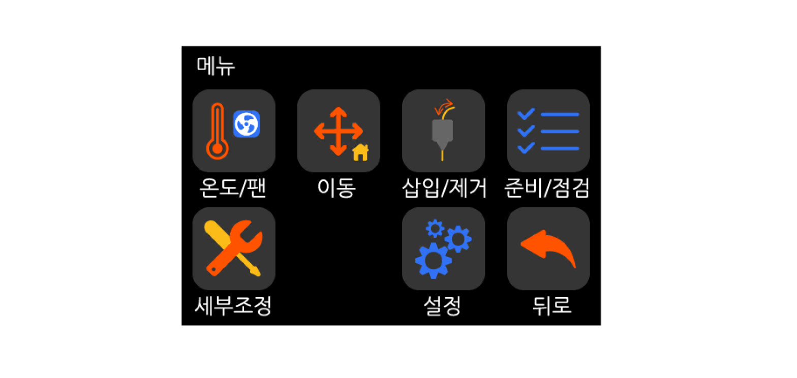

메인 메뉴
{kind=link}
온도/팬 : 예열과 팬 속도를 조절할 수 있는 메뉴 모음.
이동 : 원점 이동(오토홈)과 각축을 각각 제어할 수 있는 메뉴 모음.
삽입/제거 : 필라멘트를 삽입하거나 제거하고, 무게를 설정할 수 있는 메뉴 모음.
준비/점검 : 출력전 프린터를 점검하거나 준비하는 과정에 필요한 메뉴 모음.
세부조정: 출력물 품질을 높이기 위해 필요한 기능이 있는 메뉴 모음.
설정 : 기계적인 설정을 하는 메뉴 모음.
온도/팬
{kind=link}
예열 : 정해진 온도 세팅들(PLA, ABS등등)에 맞추어 예열할 수 있는 메뉴 모음.
온도 : 정해지지 않은 온도들을 직접 지정할 때 사용하는 메뉴.
팬 : 쿨링팬의 속도를 조절하는 메뉴.
냉각 : 현재 온도가 예열된 상태라면, 예열을 멈추고 냉각을 시작하라는 메뉴.
이동

Home : 원점 이동에 관한 메뉴 모음.
이동 : X,Y,Z 축을 작동시킬 수 있는 기능.
토출 : E 축을 작동시킬 수 있는 기능.
St. A 해제 : 스텝 모터가 Hold 상태일 때 Hold를 해제하는 기능.
Z 조정 : Z 프로브 오프셋 조정을 인위적으로 할 수 있는 기능.
베드 레벨 : 레벨링과 관련된 세부항목을 살펴보거나 조절할 수 있는 메뉴 모음.
삽입/제거
{kind=link}
무게 설정 : 필라멘트의 무게를 설정하는 메뉴 모음.
삽입 : 필라멘트를 삽입하는 기능.
제거 : 필라멘트를 제거하는 기능.
준비/점검
{kind=link}
팬 점검 : 팬을 점검하는 기능.
예열 : 예열 성능을 점검하는 기능.
XY 점검 : 벨트 텐션과 배선 등을 점검하는 기능.
필라멘트 : 필라멘트 압출 관련 성능을 점검하는 기능.
Z 수평 조절 : X축 좌우가 수평을 맞추고, 베드 전체의 Z 방향 수평도 맞추는 기능.
레벨링 : 오토레벨링을 이용하여 Z 프로브 오프셋 값을 조절하는 기능.
세부 조정
{kind=link}
PID : 설정 온도를 안정적으로 유지하기 위해, PID 값을 조절하는 기능.
스텝 조절 : 익스트루더가 필라멘트를 밀어내는 mm 양을 조절하는 기능.
센서 조정 : 오토레벨링 센서가 온도에 따라 감지 거리를 보정하는 기능.
모터 감도 : 원점 이동시 모터가 부딪히면서 멈추는 과정에서 멈추는 감도를 조절하는 기능.
Z 보정 : 오토레벨링을 사용해도 부분적으로 레벨링이 안되는 부분을 보정해 주는 기능.
{kind=link}
화면 : 디스플레이의 터치를 보정하기 위한 기능
기계 : 기계의 각종 기능들을 확인할 수 있는 메뉴 모음
특성 : 프린터의 미리 설정된 기능들을 변경할 수 있는 메뉴
정보 : 메인보드, TFT 디스플레이의 정보를 볼 수 있는 버튼
연결 : 통신과 관련된 메뉴 모음